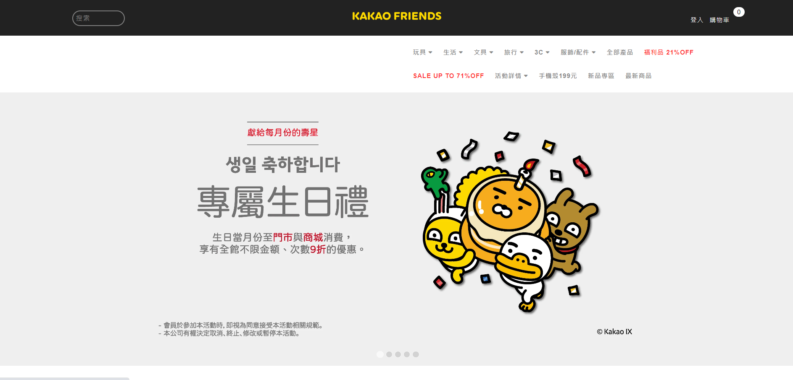

SEO Strategy
Managed SEO across multiple B2B brands with attention to content, technical SEO, and long-term ranking performance.
Comfortable with multi-brand, multilingual, and sustained operating models.
I'm
Mid-level Product Manager focused on SEO, content operations, CRM funnel design, and conversion improvement.
I treat growth as a product system that can be designed, measured, and scaled, rather than as a collection of one-off campaigns. My work spans SEO programs, AI-enabled content workflow, CRM lead operations, and conversion friction analysis.
I also bring finance and ecommerce product experience into growth work, which gives me a stronger process-design, ownership, and cross-functional execution lens than a pure marketing background.
Best suited for SEO PM, Growth PM, content operations, demand generation, and funnel-optimization roles.
multi-brand, multilingual, and cross-region SEO program management
lead tracking and funnel-stage visibility integrated into operating workflow
content production broken into repeatable, transferable, and scalable workflows
evaluate conversion friction across traffic, pages, KYC, and user journeys
Growth work here emphasizes systems, operating rhythm, and funnel ownership, not one-off campaign execution.
Built around organic acquisition, content systems, CRM funnel design, and AI workflow operations.
Managed SEO across multiple B2B brands with attention to content, technical SEO, and long-term ranking performance.
Comfortable with multi-brand, multilingual, and sustained operating models.
Standardized AI short-video and content workflows to improve throughput and consistency.
Turn content work into a repeatable process rather than isolated production.
Integrated Zoho CRM with lead operations to improve lead quality, tracking, and decision speed.
Connects traffic performance to downstream pipeline quality.
Care about the friction points across KYC, landing flows, and user journey design.
Able to solve growth and product-flow issues together.
Ordered for SEO, content operations, funnel management, and conversion optimization relevance.
Role: SEO Program Manager
Role: Marketing Manager
Role: Product Manager | Company: Australian CFD brokerage Zerologix / ACY
Roles across frontend, product, and operations
Focused on SEO, content operations, conversion improvement, and funnel integration.

Traditional machine-tool brands needed stronger global digital acquisition capability.
Multi-brand, multilingual SEO lacked an integrated operating model.
Aligned content, technical SEO, CRM, and stakeholder needs into one operating flow.
Built a maintainable SEO operating rhythm and made inquiry quality and content output easier to track.

The finance platform needed both acquisition performance and compliant conversion flow.
If SEO, KYC, and user journey are handled separately, traffic value is lost before conversion.
Worked across SEO performance, flow design, and KYC checkpoint improvements.
Connected organic traffic, KYC checkpoints, and conversion flow into one review loop; exact growth multiplier is reserved for interview evidence.

The website needed to support not only launch, but also content visibility, inquiry flow, and operational rhythm.
When traffic, pages, channels, and backend flow are disconnected, growth performance gets diluted.
Contributed to ecommerce setup, O2O flow, and website-content coordination.
Built a foundation that supported both visibility and conversion cadence.
GA, Search Console, CRM pipeline, ranking dashboard, or AI workflow screenshots with client and sensitive data removed.
These visuals show that the work is not only content production, but system-level traffic, funnel, and conversion management.
Growth PM keywords paired with the operating systems where I have used them.
Used across multi-brand SEO programs, multilingual content planning, and AI-assisted production workflow.
Applied to inquiry tracking, lead-stage visibility, and conversion-quality analysis across SEO and finance work.
Used to align technical SEO, content, CRM, and stakeholder needs into repeatable operating systems.
Connected ranking, funnel, and user-journey signals to identify friction and improve conversion quality.
Open to conversations about SEO PM, Growth PM, CRM funnel, and content operations opportunities.